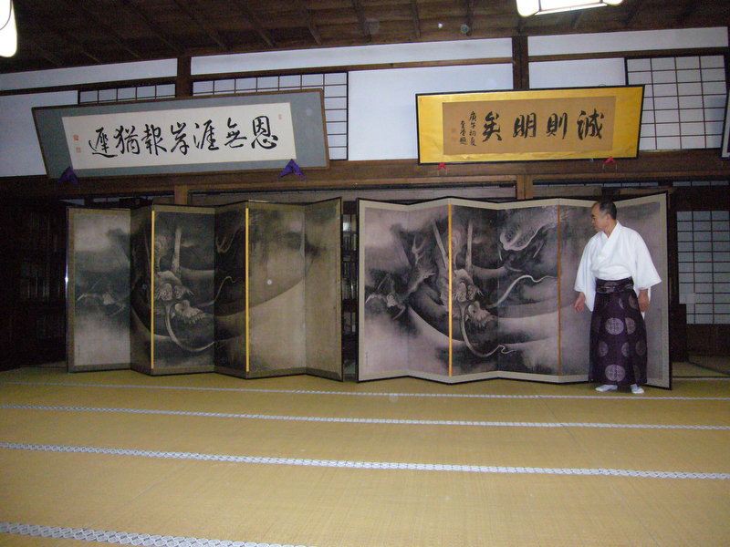
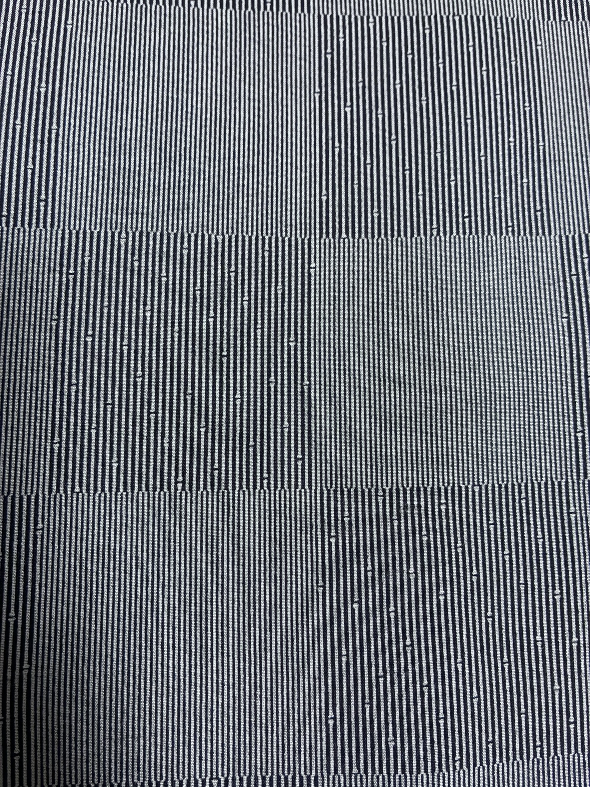
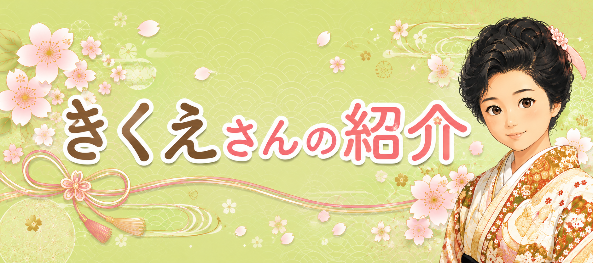
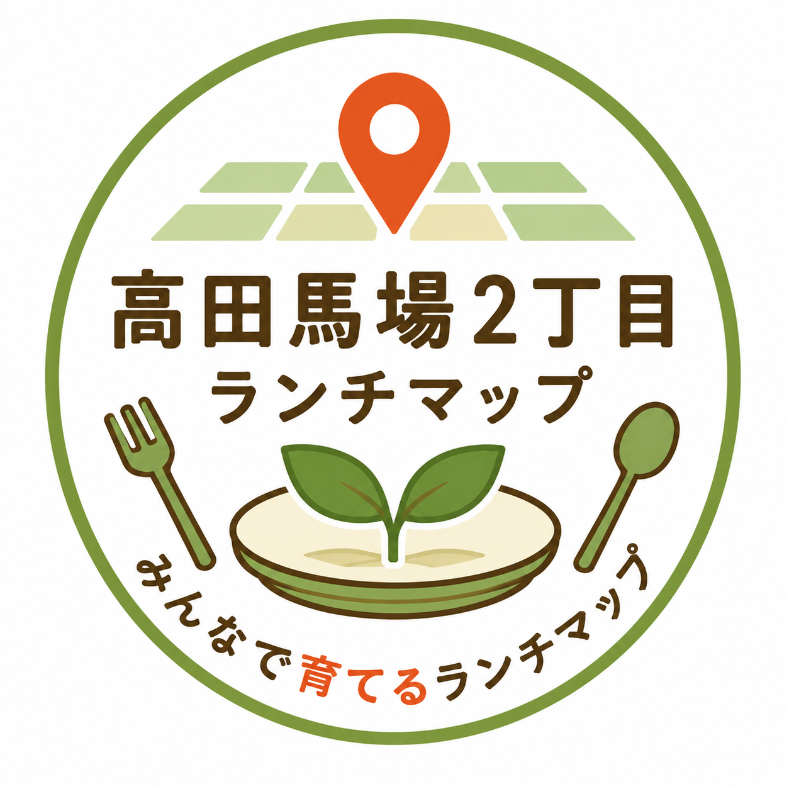
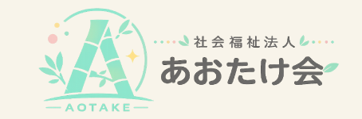
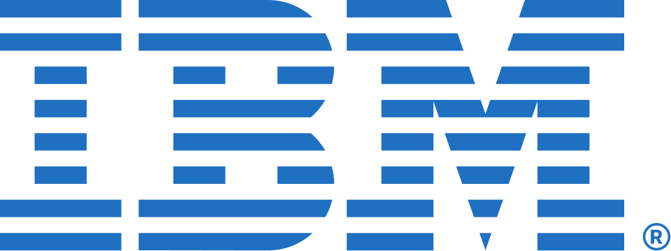

つむぎ研究所
人・情報・文化を紡ぎ、
価値あるものを未来へ届ける
Mission 理念
人・情報・文化を未来へ紡ぐ。
企業・地域・個人が大切にしてきた想いや文化の価値を分かりやすく言葉と形に変換します。課題解決のためにWebやAIなどのデジタル技術を活用し、継承されるべき価値とより過ごしやすい便利な世の中を次世代へ届けることを目指します。
About つむぎ研究所とは
名前の由来
「つむぎ研究所」の「つむぎ」には、人・情報・文化を紡ぎ、新しい価値を生み出したいという想いを込めています。 これまで受け継がれてきた文化や、さまざまな場所に存在する情報をつなぎ合わせます。 さらに新しいアイデアを加えることで、次の世代へつながるサービスや仕組みを生み出したいと考えています。 そのためには、情報だけではなく、人との出会いや信頼関係を大切に育みながら紡いでいくことが欠かせません。文化や情報を未来へつないでいきたいという想いを、「つむぐ」という言葉で表現しました。 また、「つむぎ」は私の趣味でもある紬（つむぎ）の着物にも由来しています。一本の糸から布が織り上がるように、多くの人や知識、経験をつなぎ合わせて価値を生み出したいという意味も込めています。このサイトのデザインにも、自分が所有する着物や帯の写真を取り入れています。
目指す姿
限られた時間や予算の中で、何を実現し、何を優先するか。その判断を支えるのは、最後は人の想いだと考えています。 また、より良いサービスや業務改革を実現するためには、信頼できる人や企業との連携が欠かせません。同じ時間やコストでも、協力し合うことで、より大きな価値を生み出せると考えています。 つむぎ研究所は、人・文化・技術を紡ぎながら、Webサイト構築、業務改革、コンサルティングなどを通じて、より良い社会づくりに貢献することを目指しています。
人・情報・文化を紡ぎ、価値ある未来へ。
一つひとつの出会いと想いを大切にしながら、 次の世代へつながる価値を紡いでいきます。
Service 事業内容
Web企画・Web制作
企業・個人の強みや文化の価値を伝えるWebサイトの企画・制作を行います。
情報活用・課題解決支援
WebやAIなどのデジタルツールを活用し、情報発信や業務課題の解決をトータル支援します。
地域・文化振興支援
地域文化のデジタルアーカイブ化や、伝統文化の継承に関する発信活動を後押しします。
Webディレクション・コンサルティング
現状の課題整理からプロジェクト推進、ターゲット層へ伝わる設計まで伴走型で支援します。
Case Studies 制作事例・課題解決事例




PROFILE
初代プロフィールサイト
課題：Webディレクターとして経験や実績を分かりやすく発信したい
提案：2026年7月10日に初代プロフィールサイトを制作。現在の「つむぎ研究所」サイトの原点となる作品。
Career 経歴・プロフィール
佐藤 慶直（Satoh Yoshinao）
つむぎ研究所（仮）代表 / Webディレクター
- 日本ヒューレット・パッカード株式会社 公共営業部（1年半）
- 日本オラクル株式会社 公共営業本部（3年）
- マカフィー株式会社 公共営業部（3年）
-

- 日本アイ・ビー・エム株式会社 TSSビジネス開発（3年）
- Planetway Japan株式会社 エストニア データ連携基盤 X-Road国内展開（技術・PM）（2年）
- 株式会社 OZ1 エストニア データ連携基盤 X-Road国内展開（技術・PM）（5年半）
- 現在 つむぎ研究所（仮）立ち上げ